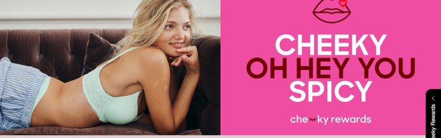

Answering each of your questions on the proposed cashback loyalty programme.
Everything here is built from three things:
your own store and order data
published case studies of cashback programmes
whatever public information we could find on brands running cashback in categories like
yours, where people buy infrequently
First
Why would we swap the current programme for cashback at all?
Today you hand out a discount code to anyone who joins the loyalty programme.
Under cashback you hand people their own money back, into a wallet, with a date it expires. Those
are not the same thing, and people do not treat them the same way.
“Losses loom larger than gains. The pain of giving something up is
roughly twice the pleasure of acquiring the same thing.”
Kahneman and Tversky, on loss aversion. The finding won the Nobel Prize in Economics in
2002. A discount code is a gain you can decline at no cost. An earned balance is something you
already own, and letting it expire is a loss.
There is a second effect on top of that. Behavioural
economists call it the endowment effect: people value a thing more highly once they think of
it as theirs. Cashback does both jobs at once. They earned it, so it is theirs, and it runs out.
Question 1
“What change would you expect to see in second purchase rate?”
A 20% improvement on the rate you have today. That is about 2,100 extra repeat customers in year one, and more after that.
+20%improvement on today's rate
26.2% → 31.4%Australia
30.6% → 36.7%New Zealand
2,118extra repeat customers, year 1
Why we believe it
Nothing in the current programme pushes a first-time buyer to come back. There is no deadline anywhere in it, so this fills a gap rather than improving something that works.
20% is the bottom of what published cashback programmes report. Wodbottom went from 40% to 53% repeat, a 33% improvement. XMiles reported +33%. Good American reported 4×. We have used the most conservative number on the board.
Year one understates it. As customers accumulate spend they move into tiers 2 and 3, which earn more and repeat more often. That is why year three is well ahead of year one.
The sales figures use your real repeat order value, A$115.63 in Australia and NZ$98.56 in New Zealand. Neither is an assumption.
Question 2
“How much would the average time between first and second purchase reduce?”
Of the 26% of your customers who do buy again, they currently do so once every 16 to 20 months. Your own website says a bra lasts 9 to 12.
Why we believe it
We would set credit to expire at six months, which lands inside the replacement window rather than well after it.
The balance stays in front of them the whole time. Every campaign email carries their own balance, by name and amount. A sale email becomes a sale plus the $12 that runs out in April.
What we will not do is put a number on the reduction. There is no published first-to-second-order figure for apparel or intimates that survives checking. It is excluded from every revenue figure in this document, so if it moves, it is upside we have not counted.
Worth its own section
You are already selling below the category average.
People buy roughly three bras a year. You are capturing about 0.7 of those from
each customer, under a quarter of the category norm.
~3purchases a yearthe category norm. Hanesbrands' own 10-K estimate,
and Roy Morgan's Australian data lands in the same place
vs
0.7purchases a yearwhat a Bendon customer actually does:
2.31 purchases in 3.5 years, from your own cohort analysis
Nothing here is broken. Your all-time repeat rate of 26% sits exactly on the
apparel benchmark. The point is that intimates should beat apparel, and does not. A bra is a
consumable on a 9 to 12 month replacement cycle. A dress is not. Intimates has an advantage over the
rest of apparel that nobody is using, and what is missing is the prompt, not the need.
What that is worth, if you close even part of it. Moving from 0.7 to 0.9
purchases a year per customer is a 29% lift in frequency. Across your online base that is worth more
than the second-purchase number in question 1, which is why we think the ceiling sits well above the
conservative figures we have modelled.
Question 3
“What impact would you anticipate on purchase frequency and customer lifetime value?”
About 7% more orders and 7% more value per repeat customer in year one, worth roughly $400,000 across a year of new customers.
Before the numbers: there is no published study of a cashback programme at a brand where people buy as infrequently as they do from you. We have taken conservative estimates from published cashback case studies in other categories and applied them to your own data. Treat this as a considered projection, not a forecast.
1.48 → 1.58orders per customer
$146 → $157value per customer
about $400,000across a year of new customers
+7%in year one, and grows after that
Why we believe it
7% is deliberately conservative and follows directly from question 1. It assumes no change at all in how often existing loyal customers buy, and no reduction in the gap between orders. Both would add to it.
Published cashback programmes report considerably more. ICON Meals reported lifetime value +20% and repeat-customer sales +57%. Wodbottom reported AOV +21% alongside the repeat lift. We have used none of their numbers in our arithmetic.
Where it comes from: a customer who returns inside four months places 2.9 orders and spends A$308 over two years; one who never returns places one order and spends A$104. Moving people between those two groups is what lifts both figures.
Everything here is your own two-year data, run through a conservative behaviour assumption.
Question 4
“What level of cashback creates a real behaviour change? Is 5% genuinely enough?”
5% is what your competitors already offer as a starting point for a cashback programme.
Their live loyalty
pages, captured 13/09/2026.

Bras N ThingsCheeky Rewards · intimates, AU5%1 point per $1, 100 points = a $5 voucher
BondsBonds Rewards · intimates, AU5%same mechanic, same rate. Both are Hanes
Cotton On& Co. Perks · apparel, AU10%*$1 = 1 point, 100 points = a $10 reward
Peter Alexandersleepwear, AU5 / 7.5 / 10%
Super Retail Grouprebel, BCF, AU5%
The Iconicfashion, AU2 – 3%
David Jonesdepartment, AU2%
Honey Birdetteintimates, AUvouchers only
*Cotton On earns on full-price items only, so the effective
rate is well below 10%. Honey Birdette runs fixed event vouchers on 30-day expiry with a $150
minimum, and no per-dollar earn at all.
Going higher than 5% at entry would be more
incentivising, and the tier ladder above it is where the real generosity sits. Where you start
comes down to what the business can carry. 5% is not an ambitious number. It is the floor the
market has already set.
Why we believe it
Your two closest competitors have both landed on exactly 5%, and Peter Alexander runs the same 5 / 7.5 / 10 ladder we are proposing. None of them arrived there by accident.
The biggest loyalty programme in Australian retail also runs 5%. Super Retail Group pays 5% back across rebel, BCF, Supercheap and Macpac with no minimum to redeem, and now puts 85.5% of all its retail sales through the programme, up from 67% six years ago.
In dollars, on your numbers: a first order of A$107 earns A$5.36. Three orders gets someone to roughly A$16. At tier 2 the same repeat order earns A$8.67. On a A$100 basket that is real money, not a token.
Below about 3% it stops working. The published programmes that report weak results are the ones paying 1–2%, where the balance is too small to be worth a trip.
Question 5
“What redemption rate and breakage rate would you expect?”
50 to 60% of the credit we issue gets used. The rest goes unclaimed and expires.
Why we believe it
Compare it with points. Smile.io measured redemption across its entire platform at 13.7% of points issued. A dollar balance gets claimed two to three times more often, because nobody has to do arithmetic to work out what it is worth.
The unclaimed 45% is what makes the percentage affordable. A 5% headline rate costs about 2.75% once breakage is taken off.
Redemption is the number we would pin down before launch. Rise holds the history across its whole client base, and every 5 points of movement shifts the cost by about A$11,000 a year.
The industry range for store credit is 24% to 56% claimed. Bombas 24%, Good American 35%, Only Natural Pet 37.4%, Allbirds Korea 45%, The Tinsel Rack 56%. We have deliberately modelled at 55%, the top of that range, because we would be pushing redemption hard on every campaign and the credit stacks on top of your sale pricing. Assuming more people claim it is the conservative choice, since claimed credit is what costs money.
Question 6
“What proportion of store customers would move into buying online?”
It depends entirely on one design decision, and the two routes give very different answers.
WE RECOMMEND
Route A · Earn anywhere, spend online only
Pros. Every redemption is a store customer buying online. The migration rate becomes
something you read off a report rather than estimate. Online margins are better. You get a real
number within six months.
Cons. Store staff have to explain why the credit cannot be used at
the till. Some store-loyal customers will find it annoying, and a few will not convert at all.
Route B · Earn anywhere, spend anywhere
Pros. Simplest for the customer, best received in store, no awkward conversation at the
till. Still lifts repeat buying across both channels.
Cons. No differentiator. Someone who prefers stores keeps buying in
stores, so the channel mix barely moves. You would be buying repeat purchases rather than
migration.
Baseline measured on a random sample of 600 customers with
in-store purchase history, 300 per market.
Why we believe it
Under Route A the arithmetic is simple. Every redemption is, by definition, a store customer placing an online order. At the 55% redemption rate from question 5, a little over half of every store customer who earns credit would place an online order to spend it. The baseline today is 11.3% who have ever bought online at all.
Under Route B we would expect a slight lift and not much more. The balance still gets emailed and reminded, which brings people to the site more often and lifts online conversion a little. But someone with a habit of buying in a store has no new reason to change.
Route A converts the habit. Route B rewards it.
What we cannot show you: no retailer has published a store-to-online migration rate, so the Route A figure is our redemption assumption applied to your baseline, not an observed result.
Question 7
“What impact would you expect on average order value?”
Down about 3%, and only on repeat orders. First orders are unaffected, because there is no credit to spend yet.
Why we believe it
This is modelled purely on redemption. An order that would have banked A$115.63 banks a few dollars less, because part of it is paid with credit earned earlier. Nothing else is in the calculation.
It is smaller than the headline percentage because only just over half the credit is ever claimed. A 5.4% blended rate at 55% redemption is a 3.0% effect.
We would not set a minimum spend to redeem. A threshold protects order value on paper but it is the most common reason people abandon a reward.
What we have not modelled, and it all points the other way: published cashback programmes consistently report AOV going up (Wodbottom +21%, Milk Bar +9%) because people spend well above their balance when they redeem. We have counted none of that, so treat the 3% as the pessimistic end.
Question 8
“How would you assess the incremental revenue and contribution, after the cost of the cashback and the gifts?”
We are proposing 5% / 7.5% / 10% cashback across three tiers, with a $250 gift unlocking at tier 2 and a $400 gift at tier 3.
One assumption before the table: we have costed the free gifts at 30% of their retail value. A $250 gift is modelled at $75 of cost, a $400 gift at $120. If your actual COGS differs, every figure below moves. It is the one number in this document most worth checking against your own.
Line
Australia
New Zealand
What it is
Extra sales
+A$235,234
+NZ$284,501
+7.4%. The repeat-rate lift from Q1, more orders from existing repeat customers, and
waking the quiet file
Credit handed out
A$185,774
NZ$219,604
5.4% blended across the three tiers
Credit actually claimed
A$102,176
NZ$120,782
55% of what is issued
Tier 2 gift
A$60,000
NZ$67,200
800 people reach it × A$75 cost ($250 retail at 30% COGS)
Tier 3 gift
A$8,640
NZ$8,760
72 people reach it × A$120 cost ($400 retail at 30% COGS)
Setup
A$30,000
NZ$30,000
platform and integration, year one only
Total cost
A$200,816
NZ$226,742
Net extra revenue
+A$34,418
+NZ$57,759
year one, before you apply your own margin
Why we believe it
The extra sales include the frequency lift from question 3, not just the repeat-rate lift from question 1. Three sources: more first-time buyers coming back (A$97k / NZ$126k), existing repeat customers buying more often (A$74k / NZ$96k), and waking the 57,777 Australian and 66,132 New Zealand customers quiet for one to three years (A$64k / NZ$63k).
One change from your brief. A $250 gift does not work at a $250 tier threshold. 3,591 people cross $250 each year, and the gifts alone would cost A$269,000. At $600 and $1,500 the crossings are 800 and 72, and it works. Gift value and threshold have to be set together.
Read the net figure as a year-one floor, not the return. Year one is the build year: you spend most of it issuing credit, and the first redemptions only start landing in the back half. The A$30,000 setup does not recur. The repeat-rate lift compounds (31.4% in year one, 33.5% in year two, 35.1% in year three) and every customer who climbs into tier 2 or 3 repeats more often than the ones below them. On the same spend, year two is well ahead of year one, and year three ahead of that. We have deliberately not put a number on years two and three, because we would be compounding a projection on a projection.
Still yours to set. The gift values, the thresholds and the percentages are placeholders chosen to show the shape.
Question 9
“Do you have benchmarks from other programmes, especially in low frequency categories?”
Not for a brand with your purchase frequency. There is published evidence for the mechanic itself, and this is all of it.
$10 back per $50, with reminders at day 30 and 7 days before expiry
Only 5% redeemed on day one, and the reminder sequence produced a 14×
lift. Reminders, not the rate. · Rise.ai · vendor-published
Why we believe it
Read these for the mechanic, not the multiple. Every one was published by the company selling the loyalty software. None is a controlled test. They are all before-and-after or member-versus-non-member, and we have used none of these numbers in our own projections.
What they do establish is that a percentage-back mechanic moves repeat rate, in every category we found it in.
Popov Leather is the closest to you, a genuinely low-frequency product, and its 20% headline costing 9% in practice is the breakage arithmetic from question 5.
Bombas is the one to act on. It is the clearest evidence we have that the reminder cadence matters more than the headline rate.
What does not exist: a published cashback case study for intimates, or for any brand with a 16 to 20 month purchase cycle, or any controlled test of cashback against discounting. We looked hard across roughly 470 sources.
Question 10
“What would you define as the success measures and thresholds to qualify this as the right direction?”
Five metrics, each with a threshold set against where you are today.
Metric
Where you are now
Threshold we would set
1. Members added a year
~35,170 via the pop-up
36,924 online-only, 138,357 if stores enrol
2. Store credit used
not measured today
50 to 60% claimed within six months
3. Lifetime value of a repeat customer buying online, over 24 months
A$308 · NZ$278
A$330 to A$355· a 7 to 15% band
4. Repeat purchase rate by cohort 30 / 90 / 180 day, 1 year, 2 year
Metric 2 is the early warning. If redemption is running below about a third at day 90, the credit is not visible enough and the fix is how we surface it, not the offer itself.
Metric 4 is the one that decides the programme. We would agree the target on each cohort before launch rather than after.
Three of these thresholds firm up once you give us your current programme's numbers, particularly the lifetime value of an enrolled customer, which we can only estimate from online data today.
One caution: a before-and-after comparison picks up everything else changing in the same window, so we should keep a note of what else moves.
Question 11
“Would moving the pop-up offer away from loyalty weaken loyalty sign-ups?”
No. Quite the opposite.
Why we believe it
Today, joining is a separate decision someone has to make at the pop-up, and that step is where most of them are lost.
Under cashback there is no step. A purchase enrols them automatically.
One number we still need from you: the 35,170 is total pop-up sign-ups. How many of those actually join the loyalty programme is the figure that sets the true multiple.
One more thing you raised on the call
“Can we legally make the credit expire after six months?”
Everything we can find says yes in both countries, with one rule to design
around in New Zealand.
Why this is not a gift card: nobody buys it. It is cashback credited
into a wallet on the customer's account after they spend, and that is what puts it outside the gift
card rules in both countries.
Australia
Gift cards must last three years under the Treasury Laws Amendment (Gift Cards) Act 2018.
That rule carries nine exceptions and the ACCC's own published list names customer loyalty
programmes as one of them. The legal basis is regulation 89C of the Competition and
Consumer Regulations 2010.
New Zealand
The equivalent rule started 16 March 2026 under the Fair Trading (Gift Card Expiry)
Amendment Act 2024 and applies to cards that are sold. Loyalty programmes are excluded,
with one catch: if someone exchanges points for a voucher it is covered again. So credit
must appear automatically when they spend, never be bought with points.
This needs sign-off from your legal team before anything launches.
Everything above comes from publicly available research: regulator guidance and the
legislation itself. It is not legal advice and Tethrd is not a law firm. No court has tested
an unusually short expiry against the unfair-terms provisions, and credit given as a refund rather
than earned is a genuinely unsettled separate case.
What we need from you
Your current programme's numbers, so we can set the thresholds properly.
Every threshold in question 10 is currently measured against your online data alone,
because that is all we hold. With your Bra Better Rewards figures we can benchmark each one
against where the programme actually sits today.
From the loyalty programme
Members enrolled, and how many join in a year
How many join via the pop-up specifically. This sets the multiple in question 11
Redemption, meaning what share of what you issue gets used
Lifetime value of an enrolled customer against one who never joined
Repeat purchase rate of members, if you hold it
Share of sales tagged to a member, online and in store
Two other things
Your lawyers' view on a six-month expiry, using the section above as the
brief.
Whether the till can display a credit balance, which decides how soon stores can be
part of it.
And the answer to the one question this document is actually
asking: is cashback the system you want to build on?
Tethrd · prepared for Bendon Group · 13/09/2026
· Bendon figures from 345,510 online orders March 2022 to August 2026, your FY26 ecommerce
analysis, your Loyalty Life Cycle file and your own cohort analysis. Outside figures independently
source-checked on 13/09/2026 and attributed individually.